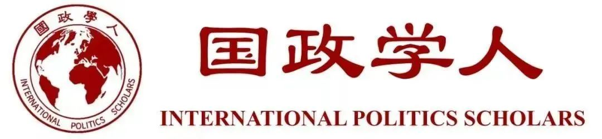
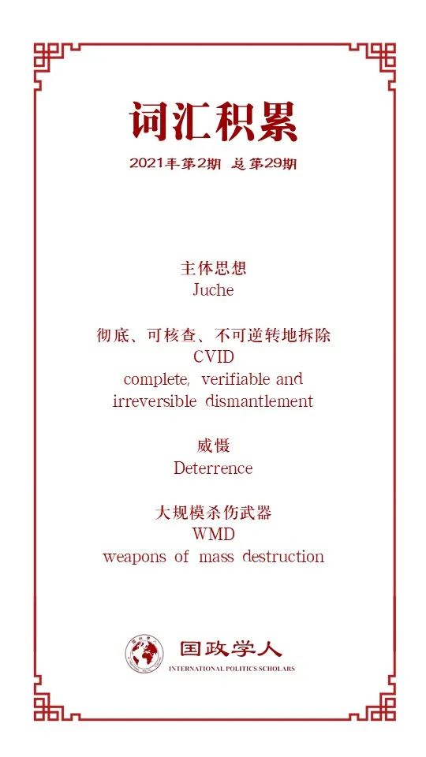

收录于合集

作品简介
【作者】 艾德华‧贺威尔（Edward Howell）是牛津大学国际关系专业研究员，他的专业领域是朝鲜半岛问题。他的研究方向是朝鲜的国内和外交政策，特别是核计划，以及朝鲜、美国和国际社会之间的关系。他的研究包括朝鲜核计划对国内意识形态的影响，以及对政权生存的影响。
【编译】 李思（国政学人编译员，韩国首尔国立大学国际区域学硕士）
【校对】 姚寰宇
【审核】 李博轩
【排版】 余姣
【美编】 杜丛竹
【来源】 Howell, E. (2020). The juche H-bomb? North Korea, nuclear weapons and regime-state survival. International Affairs , 96(4), 1051-1068. doi:10.1093/ia/iiz253
【归档】 《国际关系前沿》2021年第2期，总第29期。
期刊简介
《国际事务》是国际关系领域的一流学术期刊，也是多学科综合性学术期刊。本刊于1992年由伦敦皇家国际事务研究所查塔姆学院(Chatham House)创立，内容来源广泛，力图囊括业内专家、学术新秀对重点、热点问题的最新思考。2019年期刊影响因子为3.705，在95个国际关系类刊物中位列第4名。
主体思想的氢弹？ ****
朝鲜、核武器与国家的生存
The juche H-bomb?
North Korea, nuclear weapons
and regime-state survival
Edward Howell
推荐语
本文作者指出，有关朝鲜核计划的现有学术研究绝大多数仍集中在遏制或与朝鲜间的外交的问题上。本文提出了一个新的“核意识形态”理论框架。通过对朝鲜精英阶层的脱北者的采访以及对朝鲜和国际上的文本分析，本文探讨了朝鲜核计划是如何深深扎根于朝鲜主体思想（juche）的国家意识形态之中，以及如何作为维持政权和国家生存的一种手段来发挥作用的。鉴于目前美朝之间关于朝鲜核问题的协商停滞局面，这篇文章具有非常及时的理论和政策意义。本文有助于从国内视角理解朝鲜的核计划，更深入地了解朝鲜的国内政治，以便了解朝鲜针对其核计划的外交政策决定。
文章导读
当前研究多集中探究核武器对朝鲜政权生存的重要性，但缺乏对朝鲜国内政治的研究，本文的研究目的就是要弥补这一不足。本文讨论了朝鲜核计划作为维护朝鲜政权生存的一种手段，朝鲜核计划与朝鲜的意识形态—“主体思想”之间的关系以及核武器是如何帮助维持朝鲜政权生存的。文章通过一个核意识形态（Nuclear Ideology）的理论框架来探讨这一难题。通过对朝鲜脱北者与外交人员的采访以及研究来自朝鲜和国际上的资料，本文主张：朝鲜之所以能够长期生存，可以看作是由核意识形态推动的尤其来自精英阶层的国内支持的结果。
正文
作者首先讨论了核武器对于国家的价值局限。威慑理论认为核打击（无论是一次打击或二次打击）会造成不可弥补的经济、军事和道德后果，因此会阻止核武器的使用。理性威慑理论推测，核威慑可以最大限度地减少两个拥有核武器的国家或一个拥有核武器的国家和另一个没有核武力的国家之间的双边冲突。本文作者认为，虽然朝鲜政权称其“国家核力量”为“强大而可靠的战争威慑力量“，但威慑理论并不能充分解释朝鲜核计划对维持朝鲜体制所具有的价值。因此，为了理解核武器是如何帮助维持朝鲜政权生存的，有必要通过社会建构主义的方法来考虑它们的价值，即，研究核武器作为国家身份（State Identity）的一部分可以起到哪些作用。
作者引用了Jacques Hymans 的“国家身份观（national identity conception，NIC)”概念，即，国家身份观反映了一个国家的价值观，强调了国内外受众对国家的看法如何促使国家领导人采取特定的外交政策行为。这些行为就包括核武器的建设和将核武器作为国家身份的核心外交政策工具。对于朝鲜的研究，国家身份观概念的方法有助于了解核武器是如何融入国家话语的。比如，在朝鲜，政权和国家仍然与民族主义和民族意识形态（即主体思想）联系在一起。作者把这种将核战略思想嵌入国家意识形态的概念定义为“核意识形态”（Nuclear Ideology）。
“核意识形态”（NI）是指发展中国家获得和发展核武器的政策背后的动机等一系列的概念，这一概念是基于国家的实力、地位和“核意识形态”在国内外的作用。 “核意识形态”可以由国内政治（如国家民族主义，或一个政权在对人民统治方面维持现状的意图）塑造，也可以由对该国家所处的国际环境的认知来塑造。在国内层面，一个国家可以利用“核意识形态”来获得民众的支持，强调国家主权和政权的正当性。在国际层面上，一个国家可以利用国内的正当性来论证其在国际上的生存权，并将其大规模杀伤性武器的开发解释成“针对朝鲜民主主义人民共和国的敌对行为的适当措施”。
为了了解朝鲜的“核意识形态”，需要先了解朝鲜的 核心国家意识形态 —“主体思想” 。朝鲜的主体思想萌生于朝鲜战争之后的金日成时期。主体的意思可以解读成“自力更生”（Self- reliance）。国家自主性是金日成领导时期的思想基础，朝鲜的核野心也随着主体思想的发展而萌生。随着社会主义国家之间关系的变化，朝鲜逐渐将“主体思想”应用到核战略思想中，并将其作为维护国家生存的重要手段。在1980年朝鲜劳动党第六次代表大会上，朝鲜将主体思想明确地具体化为国防自卫、政治自主和经济自立。尽管主体思想在朝鲜国家机关内部进行国内外决策的重要性尚不明确，但这种意识形态仍与朝鲜的核战略思想并行地被朝鲜政权加以应用。
“核意识形态”可以通过三个过程维持朝鲜政权：与美敌对、构建国内政权的正当性和以人民为目标来维持其正当性。第一步，朝鲜利用主体思想将核武器与更广泛的主权、领土、自卫和国家命运的概念联系在一起，将朝鲜定位在敌对的国际秩序中——与美国敌对。第二步，通过民族主义，将朝鲜核战略思想嵌入到主体思想中，在国家内部传播。第三步，通过在全民中全面传播“核意识形态”，巩固了政权的合法性。根据脱北者的证言，尽管人们对主体思想的信任稍减，但在国内的合法性仍然可以保证。
结论
本文作者在结论中指出，单纯从国际体系的视角研究朝鲜容易导致决策失误。国际社会应该研究朝鲜核计划嵌入在国内意识形态中的程度，以及其“核意识形态”在过去，特别是金日成时代早期，如何以现有形式维持国家政权。通过“核意识形态”的视角，我们可以更好地理解朝鲜核计划的国内目的，从而重新认识核武器对朝鲜政权的价值。
译者评述
本文作者提出了一个从朝鲜国内政治来研究朝鲜的核战略思想的新视角，对于朝核问题的研究具有理论上的借鉴意义，但是个人认为，从这一视角来对朝核问题做研究的价值虽有，但在实际研究过程中，尤其是在数据收集和分析方面困难重重，因此研究结果不可避免地存在天然的局限性。由于其政权透明度的特殊性，关于国内政治决策者的战略以及决策过程相关的数据只能通过脱北者的证词和国际上其他已有文献来搜集，因此可搜集到的数据本身只是冰山一角，因此研究的过程和最终的研究结果终究会有种“雾里看花”的感觉。
但是，与其他所有关于朝鲜的分析同理，缺乏来自该国家的直接信息，以及来自国家机构的这些信息的可靠性一直是最大的遗憾。关于这一点，本文作者在最后也承认了研究的局限性。但不可否认的是，本文作者通过这一视角研究朝鲜的主体思想与其核战略思想的相互作用，以及朝鲜核计划嵌入在国内意识形态中的程度这一思路是很有参考价值的。日后，关于朝鲜的国内政治研究，比如朝鲜民众越来越多地（以非法方式）接触国外媒体，以及国内对主体思想的信仰程度越来越低等因素是否会影响到国家生存、国内民众对主体思想和对核计划的支持程度是否一致、以及2018年至2019年进行的朝美会谈和韩朝会谈是否证实了朝鲜弃核的决心等问题都可以从这篇文章的研究中得到一些借鉴。
词汇整理

文章观点不代表本平台观点，本平台评译分享的文章均出于专业学习之用, 不以任何盈利为目的，内容主要呈现对原文的介绍，原文内容请通过各高校购买的数据库自行下载。

好好学习，天天“在看”
国政学人
支持学术公益与知识传播
微信扫一扫赞赏作者 __赞赏
已喜欢，对作者说句悄悄话
取消 __
发送给作者
发送
最多40字，当前共字
上一页 1/3 下一页
长按二维码向我转账
支持学术公益与知识传播
受苹果公司新规定影响，微信 iOS 版的赞赏功能被关闭，可通过二维码转账支持公众号。